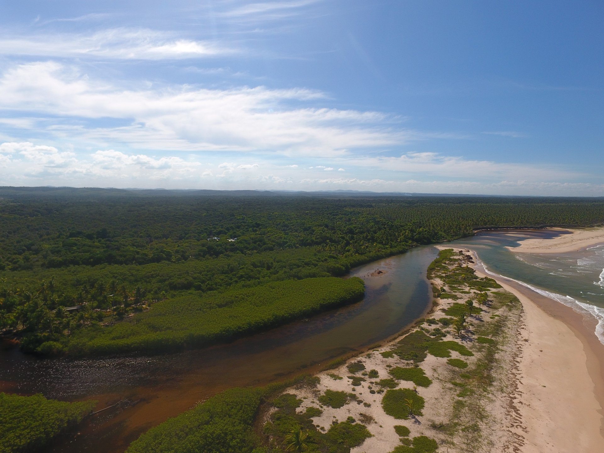

Com plena consciência das limitações e do ritmo possível, cada passo é dado com escuta, presença e responsabilidade.

Rio Piracanga encontrando o mar · Península de Maraú · Sul da Bahia
Nossos sonhos para o próximo ciclo — ousados, mas com os pés no chão e o coração nas Águas.
01
Certificação Participativa de Cuidados das Águas para as casas que completaram todos os critérios.
02
Estratégias para aumentar o número de casas participantes e caminhar para 100% de adesão.
03
Portal virtual onde moradores de Piracanga acessam informações sobre a qualidade da água da comunidade.
04
Primeira reunião do Conselho Consultivo — em formação, com representantes de diversas instituições.
05
Criar espaço de diálogo com a Agência Nacional de Águas e fortalecer parceria com o IFES.
06
Assegurar legalmente o Rio Piracanga e demais corpos d'água como seres com direitos.
07
Promover um evento internacional direcionado ao Cuidado das Águas.
08
Ferramenta de pegada hídrica adequada à realidade da América Latina — conectando pessoas, empresas e territórios.
"Que as Águas que nos sustentam
sigam puras, vivas e respeitadas."
Instituto Somos Água · Relatório de Impacto 2024/25